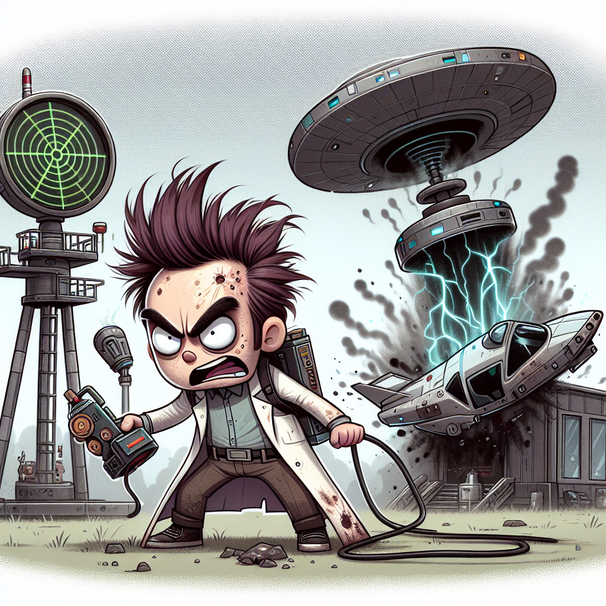

Der Absturz
Anscheinend hat das Space Shuttle beim Abflug ein Raumschiff gestreift und es dadurch zum Absturz gebracht.
Okay, hört zu! Ich bin stinksauer, weil dieser Schurke mein Raumschiff zum Absturz gebracht hat! *burp* Wie? Ihr seid auf der Jagd nach ihm? Dann seid ihr ja echt inkompetent... sonst wäre er jetzt nicht in mein Raumschiff geflogen... Aber keine Sorge, ich habe einen Plan. Ich werde euch helfen, indem ich einen Teleporter direkt in eure Wohnung installiere. Der bringt euch direkt auf ein Raumschiff. Meinen Berechnungen zufolge - (peilt über den Daumen die Rakete an) - fliegt die Rakete zum Mond. *burp*
Aber zuerst müssen wir mehr über diesen Bösewicht herausfinden. Es ist Zeit für eine forensische Jagd! Lasst uns alles über diesen Kerl herausfinden und ihm zeigen, dass er sich mit den Falschen angelegt hat. Macht euch bereit für intergalaktische Rache!


Wir stehen bereit, die forensische Jagd beginnt. Der Code für den Bus in die Stadt ist 0000.